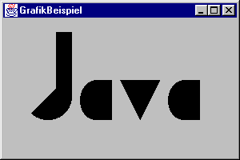
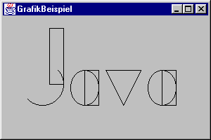
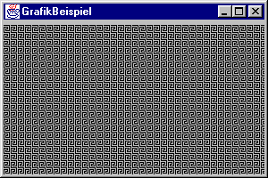
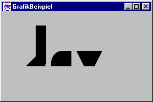

24.4 Weiterführende Funktionen
Mit Ausnahme von drawLine
können alle vorgestellten Routinen entweder im Linien-
oder im Füllmodus verwendet werden. Beginnt der Methodenname
mit draw, erfolgt die Ausgabe
im Linienmodus. Es wird lediglich der Umriss der jeweiligen Figur
gezeichnet. Beginnt der Methodenname mit fill,
erfolgt die Ausgabe im Füllmodus und das Objekt wird mit ausgefüllter
Fläche gezeichnet.
Nachfolgend noch einmal eine Zusammenstellung der verfügbaren
Füllfunktionen:
public void fillRect(int x, int y, int w, int h)
public void fillRoundRect(
int x, int y, int w, int h, int xr, int yr
)
public void fillPolygon(int[] arx, int[] ary, int cnt)
public void fillPolygon(Polygon p)
public void fillOval(int x, int y, int width, int height)
public void fillArc(
int x, int y, int width, int height,
int startAngle, int arcAngle
)
|
java.awt.Graphics |
Das nachfolgende Beispiel verwendet die Methoden fillRect,
fillPolygon,
fillOval
und fillArc,
um einen stilisierten »Java«-Schriftzug anzuzeigen:
001 /* GefuellteFlaechen.inc */
002
003 public void paint(Graphics g)
004 {
005 int[] arx = {150,175,200,150};
006 int[] ary = {100,150,100,100};
007
008 //---J
009 g.fillRect(70,40,20,80);
010 g.fillArc(30,90,60,60,225,180);
011 //---a
012 g.fillOval(100,100,40,50);
013 g.fillRect(120,100,20,50);
014 //---v
015 g.fillPolygon(arx,ary,arx.length);
016 //---a
017 g.fillOval(210,100,40,50);
018 g.fillRect(230,100,20,50);
019 }
|
GefuellteFlaechen.inc |
Listing 24.10: Ausgabe von gefüllten Flächen

Abbildung 24.8: Ausgabe von gefüllten Flächen

Abbildung 24.9: Ausgabe des Java-Logos als Liniengrafik
Die Klasse Graphics
stellt auch einige Methoden zum Bearbeiten bereits gezeichneter Flächen
zur Verfügung. Diese erlauben es beispielsweise, einen rechteckigen
Ausschnitt des Ausgabefensters zu löschen oder zu kopieren:
public void clearRect(
int x, int y,
int width, int height
)
public void copyArea(
int x, int y,
int width, int height,
int dx, int dy
)
|
java.awt.Graphics |
Die Methode clearRect
löscht das angegebene Rechteck, indem sie den Bereich mit der
aktuellen Hintergrundfarbe ausfüllt. (x,y)
bezeichnet die linke obere Ecke, (width,height)
die Breite und Höhe des zu löschenden Bereichs.
Soll ein Teil des Fensters kopiert werden, kann dazu die Methode copyArea
verwendet werden. Die ersten vier Parameter bezeichnen in der üblichen
Weise den zu kopierenden Ausschnitt. (dx,dy)
gibt die Entfernung des Zielrechtecks in x- und y-Richtung
an. copyArea
kopiert das ausgewählte Rechteck also immer an die Position (x+dx,
y+dy).
Das folgende Beispiel demonstriert die Anwendung von copyArea
anhand eines Programms, das den Bildschirm mit einem Muster füllt:
001 /* Kopieren.inc */
002
003 public void paint(Graphics g)
004 {
005 int xorg = 4;
006 int yorg = 28;
007 int[] arx = {0,6,6,2,2,4,4,0,0};
008 int[] ary = {0,0,6,6,4,4,2,2,8};
009 for (int i = 0; i < arx.length; ++i) {
010 arx[i] += xorg;
011 ary[i] += yorg;
012 }
013 g.drawPolyline(arx,ary,arx.length);
014 for (int x = 0; x <= 300; x += 8) {
015 for (int y = 0; y <= 160; y += 8) {
016 if (x != 0 || y != 0) {
017 g.copyArea(xorg,yorg,8,8,x,y);
018 }
019 }
020 }
021 }
|
Kopieren.inc |
Listing 24.11: Kopieren von Flächen mit copyArea
Hier wird zunächst ein einziges Exemplar des Musters in der Größe
8*8 Pixel in der linken oberen Ecke des Fensters gezeichnet. Alle
weiteren Wiederholungen werden durch Kopieren hergestellt:

Abbildung 24.10: Kopieren von Grafiken
Jeder Grafikkontext hat eine zugeordnete Clipping-Region, die
dazu dient, die Ausgabe auf einen bestimmten Bereich einzugrenzen.
So wird beispielsweise verhindert, dass wichtige Teile eines Fensters,
wie z.B. der Rahmen oder die Menüzeile, von den Ausgabeoperationen
des Programms überschrieben werden.
Auch in Java besitzt ein Fenster eine Clipping-Region, die an das
übergebene Graphics-Objekt
gebunden ist. Beim Aufruf der paint-Methode
entspricht ihre Größe der zur Ausgabe zur Verfügung
stehenden Fläche. Mit Hilfe der Methode clipRect
kann die Clipping-Region nun sukzessive verkleinert werden:
Soll die Clipping-Region auf einen beliebigen Bereich innerhalb des
aktuellen Fensters ausgedehnt werden (der dabei auch größer
sein kann als die bisherige Clipping-Region), so kann dazu die Methode
setClip
verwendet werden, die in zwei verschiedenen Ausprägungen zur
Verfügung steht:
public abstract void setClip(int x, int y, int width, int height)
public abstract void setClip(Shape clip)
|
java.awt.Graphics |
Die erste Version übergibt ein Rechteck, das die Größe
der gewünschten Clipping-Region in Client-Koordinaten angibt.
Die zweite Variante erlaubt die Übergabe eines Objekts, welches
das Shape-Interface
implementiert. Das Interface besitzt derzeit jedoch nur die Methode
getBounds,
mit der das umschließende Rechteck ermittelt werden kann:
Da außer Rechtecken derzeit keine anders geformten Shape-Objekte
zur Definition der Clipping-Region unterstützt werden, wollen
wir hier nicht weiter auf die zweite Variante von setClip
eingehen.
Soll die Ausdehnung der aktuellen Clipping-Region ermittelt werden,
so kann dazu eine der Methoden getClip
oder getClipBounds
verwendet werden:
public abstract Shape getClip()
public abstract Rectangle getClipBounds()
|
java.awt.Graphics |
Dabei liefert getClip
ein Shape-Objekt,
das derzeit denselben Einschränkungen unterliegt wie das beim
Aufruf von setClip
übergebene. getClipBounds
liefert das kleinste Rechteck, das die aktuelle Clipping-Region vollständig
umschließt.
Das folgende Beispiel wiederholt die Ausgabe des Java-Logos, grenzt
aber vorher die Clipping-Region auf ein Fenster der Größe
150*80 Pixel ein, das seinen Ursprung an Position (50,50) hat:
001 /* Clipping.inc */
002
003 public void paint(Graphics g)
004 {
005 int[] arx = {150,175,200,150};
006 int[] ary = {100,150,100,100};
007
008 g.setClip(50,50,150,80);
009 //---J
010 g.fillRect(70,40,20,80);
011 g.fillArc(30,90,60,60,225,180);
012 //---a
013 g.fillOval(100,100,40,50);
014 g.fillRect(120,100,20,50);
015 //---v
016 g.fillPolygon(arx,ary,arx.length);
017 //---a
018 g.fillOval(210,100,40,50);
019 g.fillRect(230,100,20,50);
020 }
|
Clipping.inc |
Listing 24.12: Verwendung der Clipping-Funktionen
Die Ausgabe des Programms erfolgt nun nur noch innerhalb der Clipping-Region:

Abbildung 24.11: Verwendung der Clipping-Funktionen